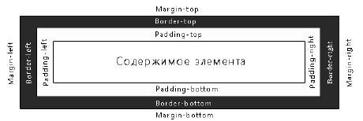

CSS
Списки (свойство list-style-type).
Нумерованные (значения
decimal,
lower-latin,
lower-roman,
upper-latin,
upper-roman)
Маркированные (значения
none,
disc,
circle,
square)
Использование маркера-картинки (свойство
list-style-image)
Ссылки
Ссылки могут находиться в четырех различных состояниях и каждое из этих состояний может быть отдельно оформлено с помощью специальных псевдо-классов:
a:link определяет оформление обычной не посещенной ссылки;
a:visited определяет оформление посещенной пользователем ссылки;
а:hover определяет оформление ссылки, на которую наведен курсор мыши;
a:active определяет оформление ссылки, на которую щелкнули мышкой.
Таблицы
Ширина (свойство
width, устанавливается в пикселях или %, можно использовать cm и em).
Высота (свойство
height, указывается в пикселях, можно использовать cm и em).
Оформление границ (свойство
border позволяет одновременно установить толщину, стиль и цвет границы вокруг элемента.
Выравнивание текста в таблице (свойство
text-align значения
right,
left,center, свойство
vertical-align значения
top,
middle,
bottom).
Отступ содержимого в ячейке (свойство
padding).
Псевдо-классы
first-child позволяет выбрать элемент, который является первым потомком в его родительском элементе;
first-letter позволяет оформить первую букву указанного элемента;
first-line позволяет оформить первую строчку указанного элемента;
before, after позволяет вставлять произвольное содержимое до и после указанных элементов.
Границы
Стиль границ HTML-элемента (свойство
border-style значения
solid,
dashed,
dotted,
double).
Цвет границы (свойство
border-color).
Толщина границы (свойство
border-width значения в пикселях или
thin,
medium,
thick).
Задание стилей для отдельных сторон, названия сторон перечислены на рисунке:

Способ быстрого задания стилей границ.
Пример1.
Border-style:dashed double solid groove – к верхней границе будет применено
dashed, к правой
double, к нижней
solid, а к левой
groove.
Пример2.
Border-style:dashed double – верхняя и нижняя граница будут оформлены как
dashed, а левая и правая граница как
double.
Сокращенная форма записи объединяет все свойства оформления границ в одном свойстве
border. Порядок следования свойств:
border-width,
border-style,
border-color (можно пропускать неиспользуемые свойства). Пример:
border:1px solid.
Отступы
(величина в пикселях (px), сантиметрах (cm), процентах (%), em):
внутренние (свойство padding);
внешние (свойства margin);
величина отступа может быть задана отдельно для каждой стороны элемента.
Краткая форма записи:
padding: 60px 20px 40px 50px; margin: 30px 50px;.
Отображение элементов
Существуют два способа отображения элементов:
visibility:hidden и
display:none).
Размещение элементов
Местоположение элементов задается с помощью следующих CSS свойств:
top – величина смещения текущего элемента от верхнего края родительского элемента;
bottom – от нижнего края родительского элемента;
left – от левого края родительского элемента;
right – от правого края родительского элемента.
Описанные выше свойства позиционирования не вступят в силу пока Вы не зададите способ размещения. В CSS существуют 4 различных способа размещения элементов:
статическое (position:static) действует по умолчанию, элементы всегда отображаются там, где они были объявлены (свойства top, bottom, left и right не работают со статичными элементами);
фиксированное (position:fixed) элементы не изменяют своего местоположения даже при прокрутке окна браузера (свойства top, bottom, left, right работают);
относительное (position:relative);
абсолютное (position:absolute).
Наложение элементов (свойство
z-index значение – любое число, может быть отрицательное).
Для предварительного знакомства c блоковой моделью внимательно посмотрите следующий HTML документ и его отображение браузером.
Новые возможности в CSS3